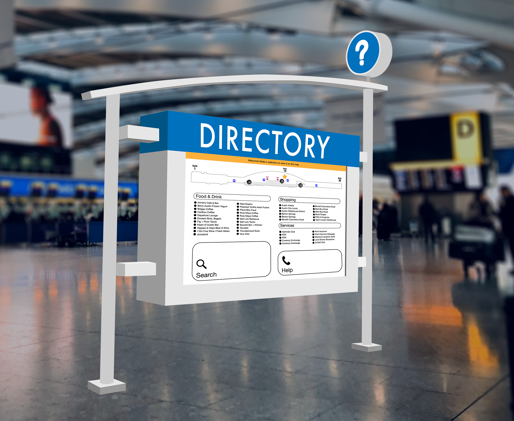

ABIA Case Study
Redesigning Austin's Airport Directory
Overview
Through generative research, heuristic analyses, and usability testing, I redesigned a concept for Austin’s airport directories.
Intro
In 2018 I worked at Austin-Bergstrom International Airport (ABIA). Being stationed at a desk in the middle of the Barbara Jordan terminal, I was approached by many inquisitive passengers who were looking for directions to various locations. I would be asked even though it wasn’t necessarily in the job description. After noticing strong trends in the questions I received, I realized I was presented with a truly unique opportunity for a case study.
Generative Research
I was able to recruit some coworkers to help keep track of the inquiries received. After explaining to them how I wanted to find the cause of the problems passengers experience on a daily basis, they were enthusiastic to help me collect as much data as possible. Over the course of one month, these were the most frequently asked questions:
- Location of restrooms
- How to exit the airport
- How to get to baggage claim
- Location of Starbucks (there isn't one)
- Where is (specific restauraunt or shop)
- Location of rideshare pickup
- Where to purchase (any item)
Observations
After conducting a heuristic analysis of the concourse, I determined why these questions came up time and time again:
- There are signs for the restrooms, but newly erected shops and restaurants were placed right in front of them, rendering them completely out of sight
- Signs pointing arriving passengers to the exit and baggage claim were plastered to construction partitions intended to conceal redevelopment—this was an issue due to the fact that only two or three businesses were shut down at a time. The only permanent exit signs were located directly above the exit
- As a solution to the limited seating, standing laptop stations and tables were placed along the edges of each gate—some right in front of the few directories. They are installed within the columns that divide the waiting areas and walkway, indicated by a low, protruding sign. (If I’m being completely honest, I didn’t know these directories existed for seven whole months.) In addition, the directories are not easy to utilize—there is no indication of your current location on every directory, an excessive amount of categories to select from, and no information about each business apart from its name.
- Over the course of one year, two-thirds of the restaurants were either temporarily closed for a revamp, or completely shut down and replaced. (I had to break a lot of hearts informing people they couldn’t find their favorite place to eat was because it wasn’t there anymore.)
Conclusions
Based on my analyses, most of these problems could be solved by installing better signage: more clear indications of the restrooms and more exit and baggage claim signs. On the other hand, the directories pose a more interesting challenge—their awkward placement and low visibility are not providing passengers the best possible experience of navigating everything ABIA has to offer. There are some people who enjoy strolling about to kill some time, but the stretch of the entire terminal is certainly no cakewalk: it extends nearly half of a mile, not including the upcoming nine-gate expansion.
This led me to ask myself, “How might I make information about the Barbara Jordan terminal more accessible?”
Design
Audience
I had to ensure my design accounted for nearly every type of user because there is no single demographic of people that fly. In order to have an effective persona, I took a goal-oriented approach that focused on the main objective: find the place you want to go. I also took into account that someone new to the airport would be more likely to seek out navigation.
What Medium to Design For
I first needed to determine how passengers would access this information. Because a mobile directory would be less costly to implement, I explored pre-existing solutions and came to the conclusion that it was not an ideal solution: apps presently on the market are outdated or have no information listed for Austin. ABIA currently has a “mobile directory” that redirects you to www.austintexas.gov, but the free Wi-Fi provided for passengers that may not have cellular data is eminently slow .


Based on my findings, I came to the conclusion that more prominent stationary directories would be the most efficient way for busy travelers to know how to get from point-A to point-B.
Design Constraints
Because of the large scale of restaurants, shops, and services, it was important for me to quickly create interactive prototypes that felt as natural as possible. When determining the tasks for my usability test, I was sure to make them not too general or specific—limiting the number of screens as well as accurately measuring the efficacy of my design.
- Find a place to buy a souvenir
- Find a place to get pizza
- Find a place to buy headphones
Version 1
I based my initial design on the vertical layout of the current directories to make use of the extra real estate available on the screen.
After identifying the three tasks I wanted to evaluate in my usability tests, I created an interactive prototype, wrote a protocol, and recruited testers that were foreign to Austin’s airport.
Version 2
When reassessing my original design, I realized that a horizontal orientation would provide a more intuitive layout for navigating the map and open up more space for a cleaner display of the content.
Usability Testing
After reiterating and retesting my design, I was certainly on the right track: all five testers were able to successfully complete each task with only two individuals requiring assistance for one particular task due to the limited functionality of the prototype.
These were some findings from my second round of testing:
- The star on the map was not a clear indication of the user’s location
- Tappable areas that didn’t look tappable
- Expected search results to populate based on their location in the terminal
- Suggestion for guided directions to the location on the map
Version 3
Invision PrototypeRetrospective
Tackling the navigation for a relatively large airport terminal was certainly challenging, but also incredibly fun. I was concerned about how I was going to test a conceptual kiosk without an actual kiosk, but the results for both in-person testing on a touchscreen laptop and remote screen-share testing proved to be completely effective.
After the first round of testing, it was elucidating that I was designing with expert-bias: I made too many assumptions, but it allowed me to take a step back and further instill the idea that I am not my user. I also came to the conclusion that no matter what medium we’re designing for, physical or digital, it’s our job as designers to help people get from point-A to point-B.